Original brick candidate and finer retained stone paving. Production art remains active; this comparison is pending the author's consolidated review.
The wall repeats over 64 MU / 2 m; the unchanged stone image repeats over 128 MU / 4 m. These are visual scales. Map geometry, lighting, water, iron, bars, actors and collision are unchanged.
Original generated source · Exact prompt · Provenance · Inventory and scope
Matched native camera placements at 1520×825 with diagnostic invulnerability/notarget. A short forward-movement check does not establish ordinary full-map navigation, combat or author acceptance. Existing gate/prop art and flat ceilings are retained.Smaller masonry courses and finer retained paving; opening remains visible under unchanged lighting.
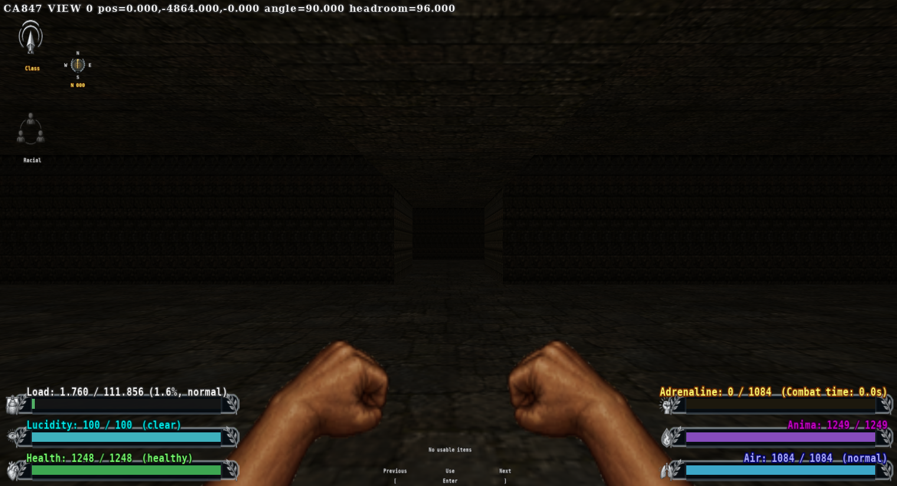
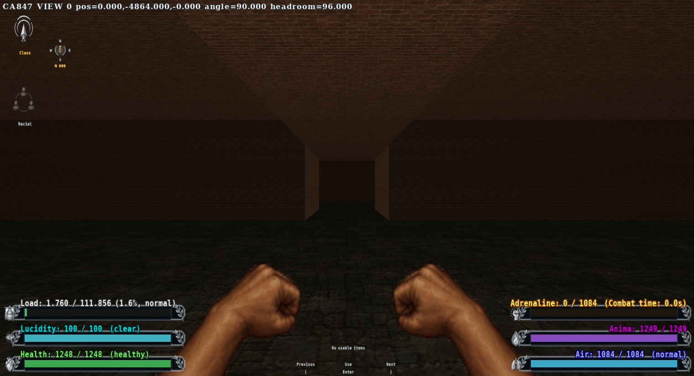
Both routes remain readable; brick repeat visible on walls and flat ceiling. No new vault geometry.
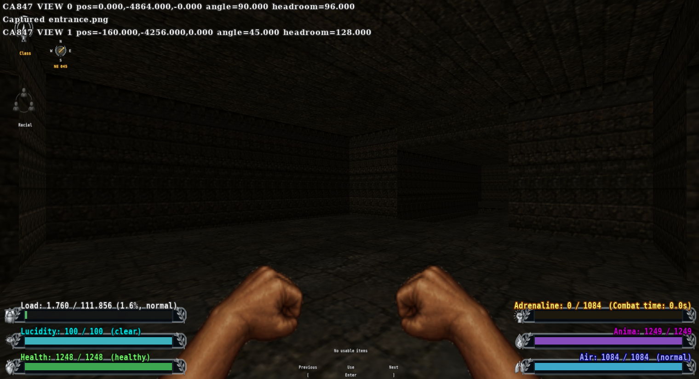
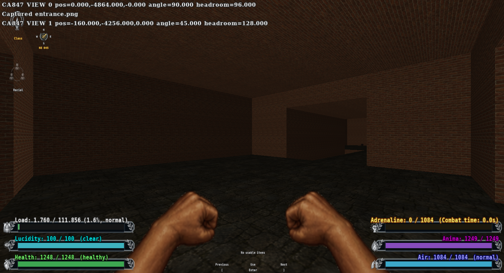
Harmless water channel, dry shelf and existing NPC remain present; distant passages are more distinguishable.
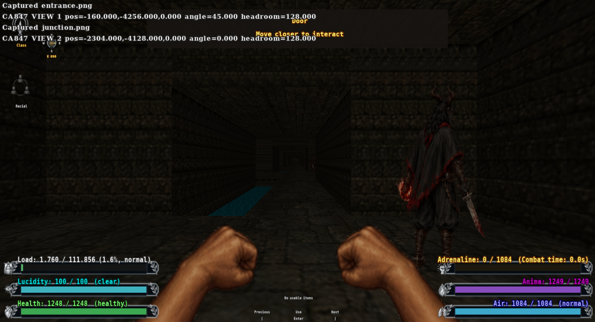
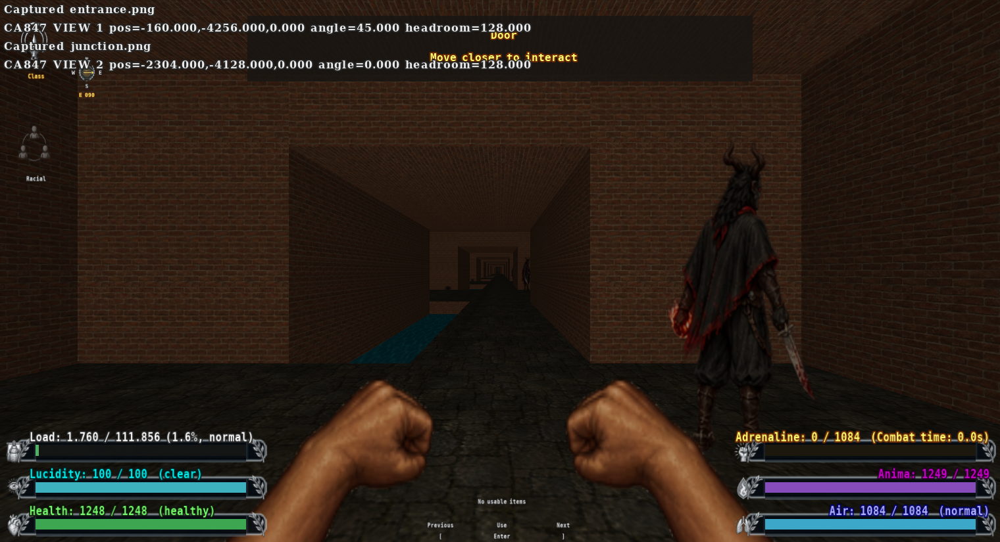
Retained workshops and overhead conduit remain visible; no props or interaction geometry replaced.
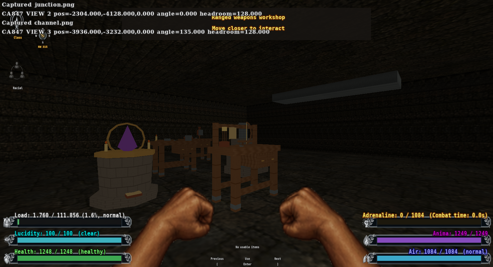
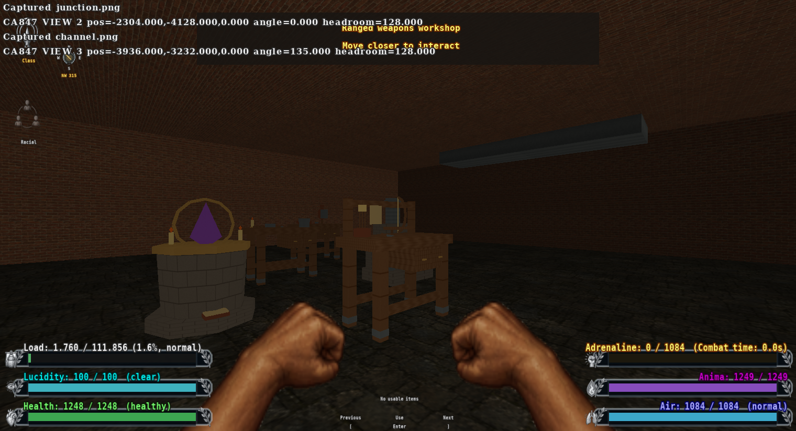
Existing locked gate remains intact and distinguishable; only surrounding masonry and paving presentation differ.
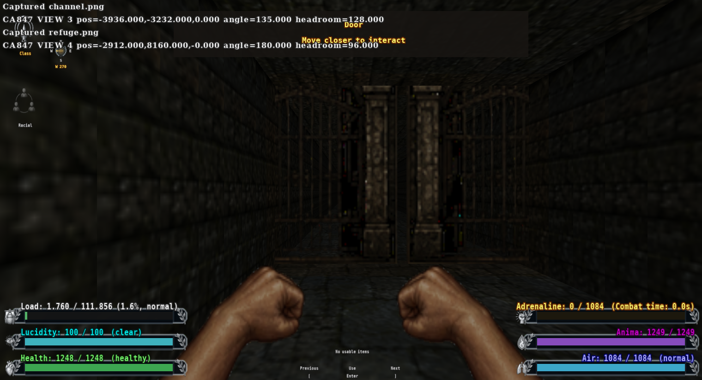
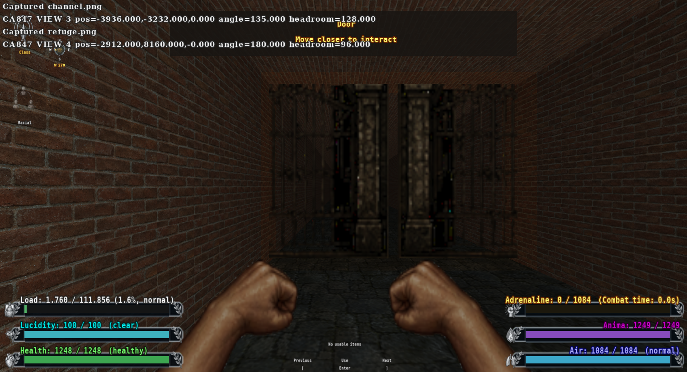
Same 24.493-MU native forward movement in both runs; a short spot check, not a full escort/progression walkthrough.
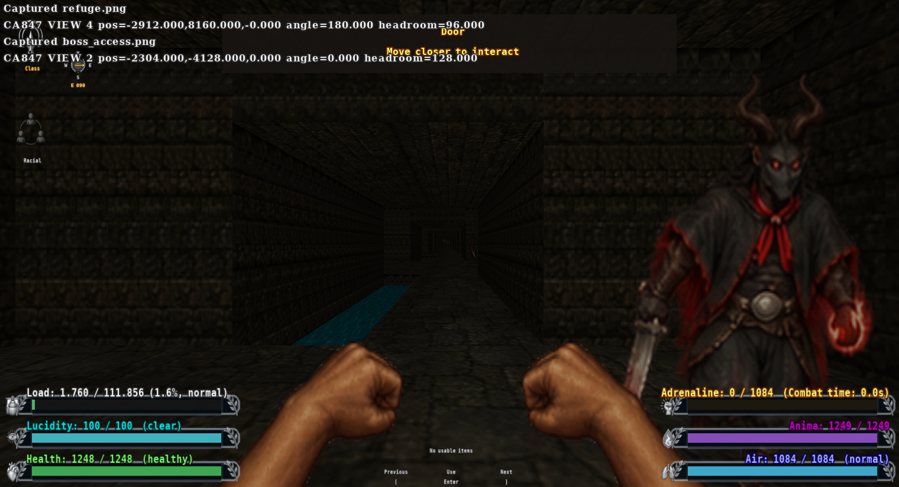
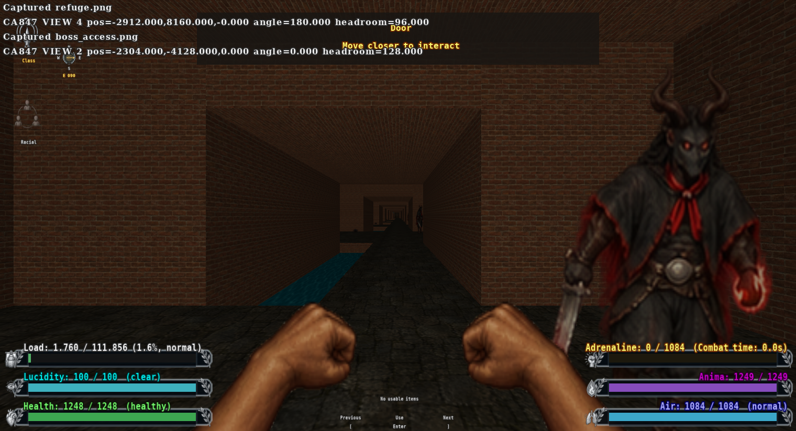